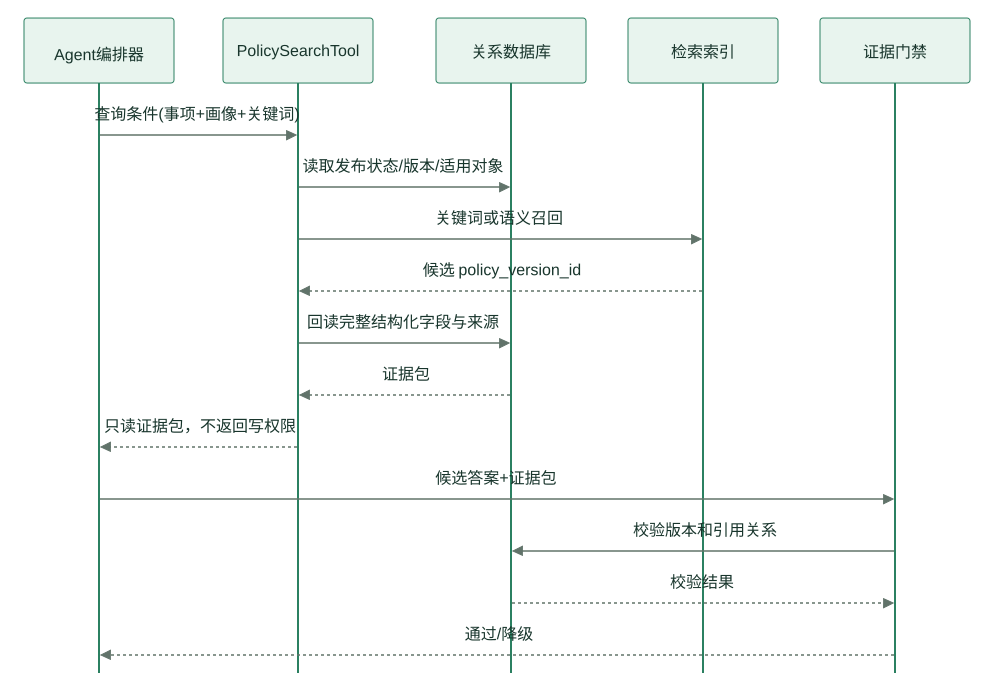

项目名称： 校园事务智能办事助手
文档版本： v1.0（概要设计阶段）
本稿整理人： 待团队确认
编制日期： 2026-11-06
团队名称： 奶娃工程
数据库基线： PostgreSQL 15+ 或 MySQL 8.0（二选一，本文优先采用标准 SQL 表达）
| 术语 | 定义 |
|---|---|
| ER 图 | Entity-Relationship Diagram，实体—联系图 |
| ORM | Object-Relational Mapping，对象关系映射 |
| PK | Primary Key，主键 |
| FK | Foreign Key，外键 |
| RAG | Retrieval-Augmented Generation，检索增强生成 |
| RBAC | Role-Based Access Control，基于角色的访问控制 |
| UTC | Coordinated Universal Time，协调世界时；数据库时间统一存储 UTC，前端按东八区显示 |
| 软删除 | 使用 deleted_at 标记删除，不立即物理删除，便于审计和恢复 |
| 政策证据 | 政策版本、原文片段、来源链接和核验状态的组合 |
字段命名采用小写下划线；所有业务表含 created_at、updated_at，需要用户删除的数据按策略保留 deleted_at。枚举可使用数据库枚举或受控字符串，应用层和数据库层必须保持同一字典。
数据库负责保存：
数据库不保存模型密钥，不把未核验的外部网页直接当作政策答案，不把完整个人敏感信息写入普通日志。向量索引不是首期必选持久化数据；若后续启用，应与政策版本通过 policy_version_id 关联，而不是替代关系库中的事实字段。

生命周期规则：政策先进入草稿，再经过来源可访问、关键条件可定位、适用对象明确、发布日期与核验时间完整等检查；只有 policy.status = PUBLISHED 且 policy_version.expiry_status <> EXPIRED 的版本可被 PolicySearchTool 返回为确定性证据。发布新版本不覆盖旧版本，旧版本保留以支持回答追溯。
下图用于查看实体间的整体连接。打印时请结合 3.2—3.4 的局部 ER 图阅读关系名称和基数；局部图重复出现的实体表示同一张表，不增加新的实体或关系。

| 实体 | 说明 | 关键约束 |
|---|---|---|
user |
平台用户最小身份 | account 唯一；不存明文密码 |
user_profile |
个性化筛选画像 | 与用户一对一；字段可为空 |
role/user_role |
RBAC 角色 | 普通学生、录入员、核验人、管理员 |
policy |
稳定的政策业务对象 | 标题/事项/发布部门；不随版本覆盖 |
policy_version |
某次发布的具体内容 | 版本号唯一；保存结构化字段和状态 |
policy_audience |
政策适用对象 | 支持学历、年级、专业、校区等维度 |
department |
负责部门和官方联系渠道 | 联系方式必须核验 |
source_document |
官方原文或附件元数据 | 保存 URL、哈希、抓取时间，不默认保存全文 |
policy_source |
政策版本与来源的多对多关系 | 可定位条款/页码/片段 |
conversation/message |
用户问答记录 | 按用户隔离；支持删除 |
answer/citation |
结构化回答及引用 | 每个政策结论应有引用 |
checklist/checklist_item |
材料清单及勾选项 | 用户确认后创建 |
reminder |
截止时间/事项提醒 | 用户所有权、时间和渠道校验 |
favorite |
政策或流程收藏 | 用户+目标唯一 |
feedback |
错误/未解决反馈 | 关联消息和处理状态 |
tool_call_log/audit_log |
Agent工具调用与管理审计 | 脱敏、可追溯、不可篡改策略 |



USER(user_id PK, account UK, display_name, status, created_at, updated_at, deleted_at)
USER_PROFILE(user_id PK/FK, education_level, grade, major, campus, consent_version, created_at, updated_at)
ROLE(role_id PK, role_code UK, role_name)
USER_ROLE(user_id PK/FK, role_id PK/FK, granted_by, granted_at)
DEPARTMENT(department_id PK, name, phone, office_location, official_url, verified_at, status)
POLICY(policy_id PK, matter_code, title, publisher_department_id FK, status, created_at, updated_at, deleted_at)
POLICY_VERSION(policy_version_id PK, policy_id FK, version_no, publish_date, expiry_status, last_verified_at, conditions_text, process_text, materials_text, location_text, deadline_text, official_url, source_excerpt, status, verified_by FK, verified_at, created_at)
POLICY_AUDIENCE(policy_audience_id PK, policy_id FK, audience_type, audience_value, match_operator)
SOURCE_DOCUMENT(source_document_id PK, title, source_url UK, publisher, published_at, content_hash, storage_uri, fetched_at, status)
POLICY_SOURCE(policy_version_id PK/FK, source_document_id PK/FK, locator, excerpt, relation_type)
CONVERSATION(conversation_id PK, user_id FK, title, status, created_at, updated_at, deleted_at)
MESSAGE(message_id PK, conversation_id FK, user_id FK, role, content, intent_code, risk_level, model_provider, model_name, latency_ms, created_at, deleted_at)
ANSWER(answer_id PK, message_id UK/FK, answer_text, steps_json, materials_json, suggested_actions_json, gate_result, created_at)
CITATION(citation_id PK, message_id FK, policy_version_id FK, field_name, excerpt, citation_order)
CHECKLIST(checklist_id PK, user_id FK, policy_id FK, title, status, created_at, updated_at, deleted_at)
CHECKLIST_ITEM(item_id PK, checklist_id FK, item_order, content, required_flag, completed, note, updated_at)
REMINDER(reminder_id PK, user_id FK, policy_id FK NULL, title, remind_at, channel, status, idempotency_key UK, created_at, updated_at)
FAVORITE(favorite_id PK, user_id FK, target_type, target_id, created_at, UNIQUE(user_id,target_type,target_id))
FEEDBACK(feedback_id PK, user_id FK, message_id FK NULL, reason_code, description, status, handler_id FK NULL, handled_note, created_at, updated_at)
TOOL_CALL_LOG(tool_call_id PK, user_id FK NULL, conversation_id FK NULL, message_id FK NULL, tool_name, request_json, result_code, policy_version_id FK NULL, latency_ms, created_at)
AUDIT_LOG(audit_id PK, actor_user_id FK NULL, action, object_type, object_id, before_hash, after_hash, request_id, created_at)
policy 与 policy_version 分离，避免政策更新造成历史引用失效；policy_audience 用行表示多种适用条件，避免在政策表中增加大量重复列；policy_source 和 citation 分别表示“版本的来源”和“某次回答引用了什么”，支持可追溯性；steps_json、materials_json、suggested_actions_json 是回答展示快照，事实仍以政策版本结构化字段为准；policy_version_id。user 用户表| 字段 | 类型 | 空 | 键/默认 | 说明 |
|---|---|---|---|---|
user_id |
BIGINT | 否 | PK | 用户标识 |
account |
VARCHAR(128) | 否 | UK | 登录账号或统一认证标识 |
display_name |
VARCHAR(80) | 是 | 展示名，非政策证据 | |
status |
VARCHAR(20) | 否 | ACTIVE |
ACTIVE/LOCKED/DELETED |
created_at |
TIMESTAMP | 否 | 创建时间 | |
updated_at |
TIMESTAMP | 否 | 修改时间 | |
deleted_at |
TIMESTAMP | 是 | 软删除时间 |
user_profile 用户画像表| 字段 | 类型 | 空 | 键/默认 | 说明 |
|---|---|---|---|---|
user_id |
BIGINT | 否 | PK/FK | 对应用户 |
education_level |
VARCHAR(20) | 是 | 专科/本科/硕士/博士 | |
grade |
VARCHAR(20) | 是 | 年级或入学年份 | |
major |
VARCHAR(120) | 是 | 专业 | |
campus |
VARCHAR(80) | 是 | 校区 | |
consent_version |
VARCHAR(30) | 否 | 画像使用说明版本 | |
updated_at |
TIMESTAMP | 否 | 最近修改 |
policy 政策主表| 字段 | 类型 | 空 | 键/默认 | 说明 |
|---|---|---|---|---|
policy_id |
BIGINT | 否 | PK | 稳定业务 ID |
matter_code |
VARCHAR(40) | 否 | IDX | LEAVE/SCHOLARSHIP/... |
title |
VARCHAR(240) | 否 | 政策名称 | |
publisher_department_id |
BIGINT | 否 | FK | 发布部门 |
status |
VARCHAR(24) | 否 | DRAFT |
政策主状态 |
created_at |
TIMESTAMP | 否 | 创建时间 | |
updated_at |
TIMESTAMP | 否 | 修改时间 | |
deleted_at |
TIMESTAMP | 是 | 软删除 |
policy_version 政策版本表| 字段 | 类型 | 空 | 键/默认 | 说明 |
|---|---|---|---|---|
policy_version_id |
BIGINT | 否 | PK | 版本标识 |
policy_id |
BIGINT | 否 | FK/IDX | 政策主对象 |
version_no |
VARCHAR(40) | 否 | UK(policy_id,version_no) | 版本号 |
publish_date |
DATE | 是 | 发布日期 | |
expiry_status |
VARCHAR(20) | 否 | MAY_EXPIRE |
有效性 |
last_verified_at |
DATE | 否 | 最后核验日期 | |
conditions_text |
TEXT | 是 | 办理条件 | |
process_text |
TEXT | 是 | 办理流程 | |
materials_text |
TEXT | 是 | 材料清单原文/结构化文本 | |
location_text |
VARCHAR(500) | 是 | 地点 | |
deadline_text |
VARCHAR(500) | 是 | 原样保留动态日期描述 | |
official_url |
VARCHAR(1000) | 否 | 官方入口 | |
source_excerpt |
TEXT | 否 | 可定位证据片段 | |
status |
VARCHAR(24) | 否 | DRAFT |
版本状态 |
verified_by |
BIGINT | 是 | FK | 核验人 |
verified_at |
TIMESTAMP | 是 | 核验时间 |
conversation/message/answer/citation 会话与证据message.role 取 USER/ASSISTANT/SYSTEM；message.intent_code 取 ELIGIBILITY/PROCESS/MATERIAL/DEADLINE/CONTACT/EXPLANATION/OUT_OF_SCOPE；risk_level 取 LOW/MEDIUM/HIGH/UNKNOWN。citation 必须关联政策版本，保存引用字段、片段和顺序。回答文本可以被用户删除，但引用审计是否保留由团队隐私策略决定。
checklist/reminder/feedback 任务辅助数据item_order 保证展示顺序；required_flag 表示政策要求，不由模型自由决定。idempotency_key 防止重复创建；remind_at 必须晚于当前时间，渠道首期为 IN_APP。WRONG/OUTDATED/MISSING_SOURCE/NOT_SOLVED/OTHER，处理结论必须关联核验版本或部门渠道。tool_call_log 记录工具名、脱敏后的输入摘要、返回码、命中的政策版本、耗时和请求关联 ID；不保存完整密钥、完整个人身份信息或未脱敏模型上下文。audit_log 记录管理端发布、下线、核验和权限变更，可采用追加写入和定期归档策略。
| 表 | 索引 | 用途 |
|---|---|---|
policy |
(matter_code,status) |
事项分类与发布状态过滤 |
policy_version |
(policy_id,status,expiry_status) |
取当前有效版本 |
policy_version |
(last_verified_at,expiry_status) |
过期复核任务 |
policy_audience |
(audience_type,audience_value,policy_id) |
用户画像匹配 |
conversation |
(user_id,updated_at desc) |
历史会话分页 |
message |
(conversation_id,created_at) |
会话消息排序 |
citation |
(message_id,citation_order) |
回答来源展示 |
reminder |
(user_id,status,remind_at) |
提醒调度 |
feedback |
(status,created_at) |
管理端处理队列 |
tool_call_log |
(conversation_id,created_at) |
追溯 Agent 调用链 |
首期可用 title、matter_code、conditions_text、process_text、materials_text、source_excerpt 的全文/关键词索引。检索结果必须二次过滤：policy.status = PUBLISHED、policy_version.status = PUBLISHED、时效不是 EXPIRED，并按适用对象和官方来源层级排序。后续引入向量检索时，保留关键词检索作为可解释兜底。
SELECT p.policy_id, p.title, pv.policy_version_id, pv.conditions_text,
pv.process_text, pv.materials_text, pv.official_url,
pv.last_verified_at, pv.expiry_status
FROM policy p
JOIN policy_version pv ON pv.policy_id = p.policy_id
LEFT JOIN policy_audience pa ON pa.policy_id = p.policy_id
WHERE p.status = 'PUBLISHED'
AND pv.status = 'PUBLISHED'
AND pv.expiry_status <> 'EXPIRED'
AND p.matter_code = :matter
AND (pa.audience_type = :audience_type OR pa.audience_type IS NULL)
ORDER BY
CASE WHEN pa.audience_value = :audience_value THEN 0 ELSE 1 END,
CASE WHEN pv.expiry_status = 'VALID' THEN 0 ELSE 1 END,
pv.last_verified_at DESC;
应用层仍需检查多个版本是否存在冲突；数据库排序不能替代人工核验和证据门禁。
| 领域实体 | 数据表 | 映射关系 | 说明 |
|---|---|---|---|
User |
user |
1:1 UserProfile，1:N Conversation |
用户聚合根 |
UserProfile |
user_profile |
1:1 | 可选画像 |
Policy |
policy |
1:N PolicyVersion、1:N PolicyAudience |
政策聚合根 |
PolicyVersion |
policy_version |
N:1 Policy，N:M SourceDocument |
可被引用的事实版本 |
Department |
department |
1:N Policy |
联系方式来源 |
Conversation |
conversation |
1:N Message |
会话聚合 |
Message |
message |
1:0..1 Answer，1:N Citation |
用户/助手消息 |
Answer |
answer |
1:1 Message |
回答展示快照 |
Citation |
citation |
N:1 PolicyVersion |
引用关系 |
Checklist |
checklist |
1:N ChecklistItem |
用户副作用数据 |
Reminder |
reminder |
N:1 User，N:1 Policy（可空） |
提醒 |
Feedback |
feedback |
N:1 User，N:1 Message（可空） |
反馈 |
Policy 聚合内部版本发布采用事务：写入版本、更新主状态、写入审计、刷新索引要么全部成功，要么回滚。Checklist、Reminder 和 Favorite 的所有权通过当前认证用户推导，禁止使用客户端传来的用户 ID 作为授权依据。| 事务 | 包含操作 | 一致性要求 |
|---|---|---|
| 发布政策 | 写版本、核验记录、更新状态、审计 | 全部成功才可被检索 |
| 保存回答 | 写助手消息、回答快照、引用、工具日志 | 回答无引用则不得标记确定性 |
| 创建清单 | 读取政策材料、写清单和项目 | 用户确认后一次提交 |
| 创建提醒 | 校验政策/时间/所有权、写提醒、审计 | 幂等；重复请求不重复创建 |
| 处理反馈 | 更新状态、处理说明、关联核验版本 | 可追溯处理依据 |
official_url 必须是 HTTPS 或经过白名单批准的官方域名。last_verified_at 不能为空；动态截止日期存原文，不强制转换为具体日期。| 项目 | 设计 |
|---|---|
| 全量备份 | 每日一次，保留至少 7 个恢复点 |
| 增量/日志 | 课程项目可按小时导出关键变更；生产按数据库能力配置 |
| 原文附件 | 对象存储版本化，记录 SHA-256 内容哈希 |
| 恢复演练 | 发布前在独立环境恢复一次，核对政策版本、引用和审计 |
| 索引重建 | 从 policy_version 重建，不把索引当唯一事实源 |
| 删除请求 | 先软删除并阻断查询，再按保留期限物理清理 |
| 监控 | 连接池、慢查询、备份结果、检索命中率、引用缺失率 |

Agent 不能直接使用数据库连接；工具层负责 SQL/ORM、权限、字段投影、脱敏和审计。模型看到的是证据包，不是数据库表结构和其他用户数据。